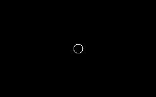
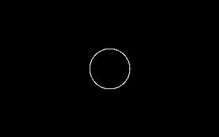
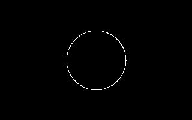

| [ < ] | [ > ] | [ << ] | [ Up ] | [ >> ] | [Top] | [Contents] | [Index] | [ ? ] |
CIRCEXT
Syntax:
CIRCEXT radius
The circle extension, CIRCEXT is even simpler to use than
SQUAREXT, since it takes only one argument, the radius, and has
no position parameters (what makes it more complicated than
SQUAREXT is it's implementation, see section CIRCEXT Implementation). CIRCEXT simply draws a white circle centered on
a black background.
In the complete testlist below, each %I command creates a
circle with a different radius.
%X[circext.cxr] %M2%C2 %I[1,10] %I[1,20] %I[1,30] %I[1,50] #B[1,20]#R #B[2,20]#R #B[3,20]#R #B[4,20]#R |
The following pictures are created:
 |
|
 |
 |
CIRCEXTImplementation